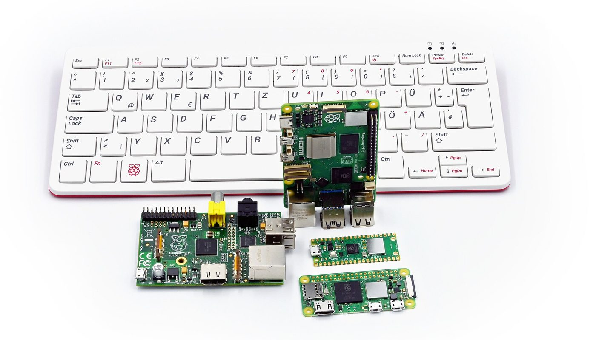
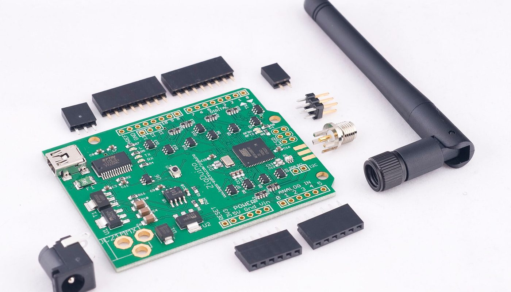

Domotique locale · aucun lien affilié sur cette page · prix relevés le 2 oct. 2026
Domotique sans abonnement : une clé Zigbee à 18,99 € au lieu d'un hub par marque — et les cinq pièges du démarrage

Un hub par marque, c'est un compte cloud, une application et un boîtier de plus. Une clé Zigbee USB à 18,99 € TTC (relevée le 2 oct. 2026 chez un revendeur français) parle à la quasi-totalité des marques Zigbee — IKEA, Aqara, Sonoff, Tuya — à travers Home Assistant, en local. Mais elle ne fait rien seule, et elle ne s'utilise pas toujours sans la flasher : voilà ce que les tutoriels passent sous silence.
Aucun lien affilié sur cette page — voir comment ça marche Prix lus le 2 oct. 2026
En bref
- La clé coûte moins de 20 €, le reste coûte plus cher. Chez un revendeur français, la clé SONOFF ZBDongle-E est à 18,99 € TTC, la ZBDongle-P à 18,99 € TTC, la Dongle-LMG21 à 19,99 € TTC et la Dongle-M (Ethernet/PoE) à 39,99 € TTC — relevés le 2 oct. 2026. Mais aucune ne fonctionne sans une machine allumée en permanence.
- Le hub d'en face est plus cher, pas bête. Le Hue Bridge est affiché 79,99 € et le Hue Bridge Pro 149,99 € sur la boutique officielle Philips Hue (relevés le 2 oct. 2026). Il marche dès la sortie de la boîte — avec son écosystème, pas avec les autres marques.
- La box officielle, elle, est vendue à part. Home Assistant Green, le boîtier tout-fait de Nabu Casa, est à 179,00 € TTC chez le revendeur français — et la clé Zigbee n'est pas dedans.
- La clé doit souvent être flashée avant de servir. La documentation de Zigbee2MQTT l'écrit noir sur blanc : un adaptateur doit recevoir un firmware coordinateur (certains arrivent préflashés). C'est le premier mur pour un débutant.
- ZHA et Zigbee2MQTT ne partagent pas la même clé. Sur le forum francophone, la réponse la plus fréquente à « ça refuse de démarrer » est un conflit entre les deux logiciels.
- Ce qui n'est pas chiffré : la rallonge USB, l'alimentation, la machine hôte et le temps de configuration. Nous ne les mettons dans aucun total de cette page.
Une clé n'est pas un hub : ce qu'on achète exactement
Home Assistant est un logiciel libre et gratuit (Apache-2.0, 91 231 étoiles sur GitHub au 2 octobre 2026). Il tourne sur une machine que vous fournissez — mini-PC, NAS, Raspberry Pi, ou le boîtier officiel. Ce logiciel sait gérer la domotique, mais il lui manque une radio pour parler aux capteurs et aux ampoules : c'est le rôle de la clé.
La clé contient une puce radio et un firmware qui en fait le coordinateur du réseau Zigbee. Elle remplace donc le hub propriétaire d'une marque par un seul boîtier qui parle à plusieurs marques. Trois choses restent à votre charge, et c'est là que les tutoriels deviennent silencieux :
- La machine. La clé n'a ni écran ni intelligence : sans ordinateur allumé 24 h/24 faisant tourner Home Assistant, elle ne sert à rien.
- Le logiciel. Deux voies existent, et il faut choisir : ZHA (Zigbee Home Automation), l'intégration intégrée à Home Assistant, ou Zigbee2MQTT, un pont séparé. Elles ne cohabitent pas sur la même clé.
- Le firmware. Beaucoup de clés arrivent avec un firmware inadapté ou ancien. La documentation de Zigbee2MQTT commence par cette phrase, que presque personne ne lit avant d'acheter :
Autrement dit : acheter la clé est la partie facile. La faire fonctionner est la partie qu'on ne voit nulle part sur la fiche produit.
Les prix : ce qui est lu, où, et quand
Les montants ci-dessous ont été relevés le 2 octobre 2026, à deux endroits : une page de résultats et de fiches d'un revendeur domotique français (prix affichés TTC), et la fiche produit de la boutique officielle Philips Hue en France. Nous ne mélangeons pas les deux colonnes : c'est écrit dans le tableau.
Le ticket d'entrée de la domotique locale (€, prix relevés le 2 oct. 2026)
Barres proportionnelles aux montants ci-dessus, base à zéro. Les quatre clés et la box viennent d'un revendeur domotique français (prix TTC affichés) ; les deux hubs viennent de la boutique officielle Philips Hue en France. Aucun de ces prix ne comprend la machine hôte (sauf la box, qui l'est) ni la rallonge USB : nous ne les avons pas chiffrés, donc ils n'apparaissent pas ici.
| Où | Quoi | Prix relevé le 2 oct. 2026 | Ce que le prix ne comprend pas |
|---|---|---|---|
| Domadoo (FR) | SONOFF ZBDongle-E — clé Zigbee 3.0 USB + antenne (puce Silicon Labs EFR32MG21) | 18,99 € TTC (en stock) | le logiciel (gratuit), une rallonge USB, la machine hôte |
| Domadoo (FR) | SONOFF ZBDongle-P — clé Zigbee 3.0 USB + antenne (puce Texas Instruments CC2652P) | 18,99 € TTC | idem : logiciel, rallonge USB, machine hôte |
| Domadoo (FR) | SONOFF Dongle-LMG21 — mini-clé Zigbee/Thread USB | 19,99 € TTC | idem, plus un éventuel firmware Thread à écrire |
| Domadoo (FR) | SONOFF Dongle-M — coordinateur Zigbee/Thread, Ethernet et PoE | 39,99 € TTC | un câble réseau, une alimentation PoE ou secteur |
| Domadoo (FR) | NABU CASA — Home Assistant Green, la box officielle (logiciel inclus) | 179,00 € TTC (en stock) | la clé Zigbee, vendue séparément |
| Boutique Philips Hue FR | Philips Hue Bridge — hub propriétaire | 79,99 € | un compte Hue ; il sert d'abord l'écosystème Hue |
| Boutique Philips Hue FR | Philips Hue Bridge Pro — hub propriétaire | 149,99 € | idem : conçu pour l'écosystème Hue |
La lecture honnête de ce tableau n'est pas « la clé est moins chère ». La clé à 18,99 € est une pièce, pas un système : elle suppose une machine qui tourne déjà chez vous. Le hub à 79,99 € est un système complet — mais fermé sur sa marque. Vous ne payez pas la même chose : d'un côté l'universalité et le contrôle local, de l'autre le confort d'un produit fini. Et si vous n'avez aucune machine à consacrer, la box officielle à 179,00 € remet les compteurs à égalité avec un hub haut de gamme.
Les cinq pièges du démarrage
1. La clé doit souvent être flashée — et le choix du firmware n'est pas évident
C'est le premier mur. Une clé vendue « Zigbee 3.0 USB » n'est pas forcément prête pour le logiciel que vous allez installer : il faut lui écrire un firmware coordinateur à jour. La documentation officielle de Zigbee2MQTT le dit d'entrée, et les fils du forum francophone le confirment côté vécu : un débutant découvre en pleine installation qu'il « doit flasher sa clé », sans savoir laquelle des versions choisir.
Ce même fil décrit la manipulation réelle : brancher la clé sur un PC, vérifier le pilote sous Windows (le dongle doit apparaître en « Silicon Labs CP210x »), choisir le fichier de firmware puis le réinjecter. Rien de sorcier, mais ce n'est pas « on branche et ça marche ».
2. ZHA et Zigbee2MQTT se disputent la même clé
Home Assistant propose deux chemins pour le Zigbee, et le second n'est pas un simple réglage du premier : ce sont deux logiciels distincts qui veulent tous les deux la main sur le port série et sur le réseau radio. La conséquence est un démarrage qui échoue, avec un message que les débutants recopient sur le forum sans comprendre.
La règle à retenir : une clé, un seul logiciel. Décidez de ZHA ou de Zigbee2MQTT avant d'appairer le premier appareil — changer d'avis après coup signifie tout réappairer.

3. Branchée à même le boîtier, la clé s'entend mal avec elle-même
Le Zigbee occupe la bande des 2,4 GHz — exactement celle qu'occupent le Wi-Fi et, surtout, les ports et disques USB 3.0, qui émettent des parasites dans cette bande. Une clé enfichée à l'arrière d'un mini-PC, à quelques centimètres d'un SSD, capte donc du bruit au lieu de ses propres appareils. Les guides d'installation du fabricant recommandent une rallonge USB pour écarter la clé du boîtier, et la documentation de Zigbee2MQTT va plus loin :
Le prix d'une rallonge USB n'est pas dans nos tableaux : nous ne l'avons pas relevé, donc nous ne l'inventons pas. Retenez juste que la clé la moins chère peut être la plus capricieuse si elle est collée à la machine.
4. Le nom du port change, et l'intégration se perd
Les tutoriels montrent souvent un chemin du type /dev/ttyUSB0. Ce nom est attribué dans l'ordre d'arrivée des périphériques : redémarrez la machine, branchez un autre appareil USB, et votre clé peut devenir /dev/ttyUSB1 — auquel cas l'intégration ne trouve plus rien. Le guide du fabricant le dit sans détour :
Ce n'est pas un piège qui coûte de l'argent, c'est un piège qui coûte une soirée. Notez le chemin by-id au moment de l'installation, pas après la panne.
5. « Zigbee » ne veut pas dire « tout »
Trois confusions coûtent un hub acheté pour rien : une clé Zigbee ne parle pas Z-Wave (autre fréquence, autre écosystème), pas Bluetooth, et pas forcément Thread. Et même entre clés Zigbee, les puces ne sont pas interchangeables : la ZBDongle-P embarque une puce Texas Instruments (CC2652P), la ZBDongle-E une puce Silicon Labs (EFR32MG21). La documentation de Zigbee2MQTT précise un point qui compte pour la suite :
Avant d'acheter, faites donc votre inventaire : quels appareils avez-vous (Zigbee ? Z-Wave ? Bluetooth ?), quel logiciel voulez-vous (ZHA ou Zigbee2MQTT), et la clé que vous visez est-elle listée comme compatible avec ce logiciel. Trois minutes de lecture valent mieux qu'un hub en double.
Trois chemins, selon ce que vous avez déjà
Aucun de ces chemins n'est « le bon » : ils ne répondent pas à la même question. Le seul achat regrettable est une clé choisie sans savoir sur quoi elle sera branchée ni avec quel logiciel elle parlera.
La checklist avant de commander
- Inventoriez vos appareils connectés : Zigbee, Z-Wave, Bluetooth ? Une clé Zigbee ne remplace que le premier — pour le reste, vous garderez un hub.
- Choisissez le logiciel d'abord, la clé ensuite : ZHA (intégré) ou Zigbee2MQTT (pont séparé). Vérifiez que la clé visée figure bien dans la liste des adaptateurs pris en charge par celui que vous avez choisi.
- Prévoyez de flasher le firmware : lisez la page de flashage avant l'achat, pas devant un écran qui refuse de démarrer. Et sachez où trouver la version de firmware correspondant exactement à votre puce.
- Ajoutez une rallonge USB (quelques euros) et éloignez la clé du boîtier, des disques et du routeur Wi-Fi. Sur une machine mal placée, préférez une clé réseau.
- Notez le chemin
/dev/serial/by-id/…au lieu de/dev/ttyUSB0: le premier ne change pas quand le second change. - Comptez la machine, pas seulement la clé. Sans ordinateur allumé en permanence, la clé à 18,99 € ne sert à rien : c'est le poste qu'on oublie dans tous les comparatifs.
- Comparez le total port compris le jour de l'achat, pas sur un guide daté — y compris celui-ci : nos prix sont ceux du 2 octobre 2026.
Par où commencer, concrètement
Ces liens sont ceux des projets, des documentations et des vendeurs cités. Aucun n'est affilié : ils sont là pour que vous vérifiiez les prix et les compatibilités à la source.
- Comprendre le logiciel : Home Assistant (logiciel libre) et sa page d'installation.
- Comparer les deux voies Zigbee : ZHA et Zigbee2MQTT — Supported Adapters (c'est cette page qui liste les clés prises en charge et la sauvegarde du coordinateur).
- Voir les prix cités : les clés SONOFF et la box Home Assistant Green chez Domadoo (FR), et les hubs sur la boutique officielle Philips Hue FR — prix constatés le 2 octobre 2026.
Le réflexe qui évite l'achat inutile : inventorier ses appareils, choisir son logiciel, vérifier la compatibilité de la clé — et seulement ensuite regarder le prix.
Questions
Une clé Zigbee à 18,99 € remplace-t-elle vraiment un hub ?
Le hub oui, la machine non. La clé contient la radio, mais elle ne fait rien seule : il faut un ordinateur allumé en permanence et un logiciel gratuit (ZHA ou Zigbee2MQTT). Un hub propriétaire à 79,99 €, lui, fonctionne dès la sortie de la boîte — avec son propre écosystème.
Faut-il flasher la clé avant de s'en servir ?
Souvent, oui. La documentation de Zigbee2MQTT écrit qu'un adaptateur doit recevoir un firmware « coordinateur » avant de pouvoir être utilisé (certains arrivent préflashés). Sur le forum francophone, la mise à jour d'une clé Sonoff ZBDongle-E est un sujet à part entière, avec plusieurs versions de firmware et un changement de pilote à faire au bon moment.
Peut-on installer ZHA et Zigbee2MQTT en même temps ?
Pas sur la même clé. Les deux se disputent le port série et le réseau Zigbee : c'est la cause la plus fréquente d'un « Zigbee2MQTT refuse de démarrer ». Choisissez l'un des deux et désactivez l'autre avant de relancer.
Pourquoi brancher la clé sur une rallonge USB ?
Parce qu'un boîtier et un port USB 3.0 rayonnent dans la bande des 2,4 GHz, celle du Zigbee. Une rallonge écarte la clé de la machine ; si l'emplacement est vraiment mauvais, la documentation conseille un adaptateur réseau (Ethernet). La rallonge n'est pas chiffrée dans cette page : nous ne l'avons pas relevée.
La clé gère-t-elle tous les protocoles sans fil ?
Non : une clé Zigbee ne parle que Zigbee. Ni Z-Wave, ni Bluetooth. Certaines clés récentes ajoutent Thread (le protocole de Matter), c'est indiqué sur la fiche. Vérifiez ce que vous avez déjà avant d'acheter, sinon vous garderez un hub en plus.
Cette page contient-elle des liens affiliés ?
Non, aucun à ce jour. Les programmes que nous pourrions utiliser (Amazon Partenaires France, AliExpress) sont enregistrés chez nous comme candidats — aucun compte créé, aucun lien posé. Si cela change, le lien sera étiqueté et cet encadré mis à jour avec la date.
Comment cette page est faite
- Aucun lien affilié ici. Les programmes pertinents pour ce matériel (Amazon Partenaires France, AliExpress) sont enregistrés chez nous comme candidats : aucun compte créé, aucun lien posé. Si un lien affilié arrive un jour, il sera étiqueté « lien affilié — on est payé si vous souscrivez » à l'endroit où il apparaît, avec
rel="sponsored", et cet encadré sera mis à jour avec la date. - Les prix sont ceux que nous avons lus nous-mêmes, le 2 octobre 2026 : sur les pages d'un revendeur domotique français (clés SONOFF et box Home Assistant Green, prix TTC affichés) et sur la fiche produit de la boutique officielle Philips Hue en France (Hue Bridge). Nous datons chaque montant parce qu'ils bougent.
- Ce que nous ne savons pas est écrit comme tel : le prix d'une rallonge USB, d'une alimentation, et le coût de la machine hôte (hors box officielle) n'ont pas été relevés — ils n'apparaissent donc dans aucun total ni dans aucun graphique.
- Les avis et messages cités sont publics et datés, avec le fil, la date et, quand il est connu, le pseudo de leur auteur. Ils sont reproduits tels quels, orthographe comprise, et ne sont pas des témoignages de clients de cette page.
- Nous ne fabriquons aucun avis, aucun témoignage et aucune statistique. Les contraintes techniques citées viennent des documentations officielles de Zigbee2MQTT et de SONOFF, et des fils publics du forum Home Assistant Communauté Francophone.
- Corrections : si un prix a changé ou si nous nous sommes trompés, écrivez-nous, nous corrigeons et nous datons la correction.
Sources
- Documentation officielle Zigbee2MQTT, page « Supported Adapters » (firmware coordinateur obligatoire avant usage ; seuls zStack et EmberZNet prennent en charge la sauvegarde du coordinateur ; recommandation d'un adaptateur réseau pour éviter les problèmes) — lue le 2 octobre 2026.
- Guide officiel SONOFF « Best Zigbee Dongle for Home Assistant » (rallonge USB recommandée pour un coordinateur USB ;
/dev/serial/by-id/…plus sûr que/dev/ttyUSB0) — lu le 2 octobre 2026. - Forum Home Assistant Communauté Francophone, fil « Mise à jour Sonoff DONGLE-E pour Zigbee2mqtt (EMBER) » (messages d'avril-mai 2024 : pilotage du firmware, changement de pilote « ezsp » vers « ember », pilote Windows à installer) — lu le 2 octobre 2026.
- Forum Home Assistant Communauté Francophone, fil « Probleme installation Zigbee2Mqtt » (messages du 8 septembre 2025 : « Failed to start zigbee-herdsman », conflit ZHA/Zigbee2MQTT sur la même clé) — lu le 2 octobre 2026.
- Page de résultats « zbdongle » et fiches produit, Domadoo (revendeur domotique français) : ZBDongle-E et ZBDongle-P à 18,99 € TTC, Dongle-LMG21 à 19,99 € TTC, Dongle-M à 39,99 € TTC, Home Assistant Green (NABU CASA) à 179,00 € TTC — relevés le 2 octobre 2026.
- Boutique officielle Philips Hue France : Hue Bridge 79,99 € et Hue Bridge Pro 149,99 € — relevés le 2 octobre 2026.
- Dépôt GitHub home-assistant/core (licence Apache-2.0, 91 231 étoiles) et Koenkk/zigbee2mqtt (licence GPL-3.0) — consultés le 2 octobre 2026.
- Photos : cartes Raspberry Pi — SimonWaldherr, CC BY-SA 4.0 ; module radio Zigbee — Gabriel Cain Photography, CC BY-SA 3.0. Toutes deux via Wikimedia Commons.
Avis clients
Avis sur ce guide, publiés après vérification. Chaque avis négatif reçoit une réponse publique — c'est comme ça qu'on s'améliore.
Les premiers avis seront publiés ici dès que de vrais lecteurs en enverront.